拼圖 01 · 家庭 · The Family Piece
The Family Piece
家庭拼圖缺席？
預防性支持與家庭影響評估——孩子的健康被看見了，家庭與父母也必須一起被看見。
林嘉慧博士指出，孩子的健康被看見了，家庭與父母也必須一起被看見。現行系統不是沒有資源，而是太晚進場——許多家庭在還不到通報門檻時，已累積高度壓力。
Core Thesis · 核心論述
- 太晚進場。系統不是沒有資源，而是太晚進場——許多家庭在還不到通報門檻時，已累積高度壓力。
- 家庭要一起被看見。只看孩子會漏接家庭；政策要問的不只是孩子有沒有被服務，也要問家庭是否更有能力支持孩子。
- 從第一天導入評估。兒家署應從第一天導入「家庭影響評估」與「家庭韌性指標」。
- 韌性不是要家庭自己扛。家庭韌性不是叫家庭自己堅強，而是讓家庭在撐不住以前，有人陪、有人教、有資源可用。
家庭韌性不是叫家庭自己堅強，而是讓家庭在撐不住以前，有人陪、有人教、有資源可用。
林嘉慧 任林教育基金會執行長、家庭韌性行動聯盟發起人
演講影片 · Watch
本場完整演講影片（含字幕）——「家庭韌性不是叫家庭自己堅強」。無法播放時可 前往 YouTube 觀看 →
簡報投影片 · Slides
共 14 張，由講者提供、原樣呈現。點擊任一張可放大檢視。 ｜ ⬇ 下載本場簡報 PDF
01
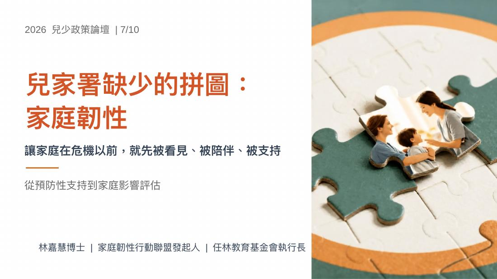
02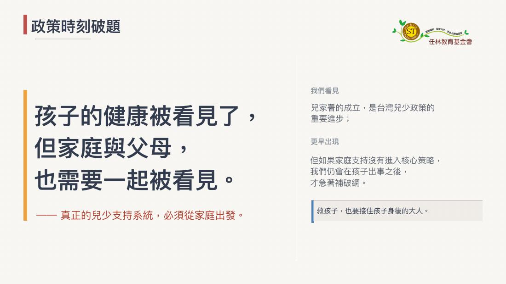
03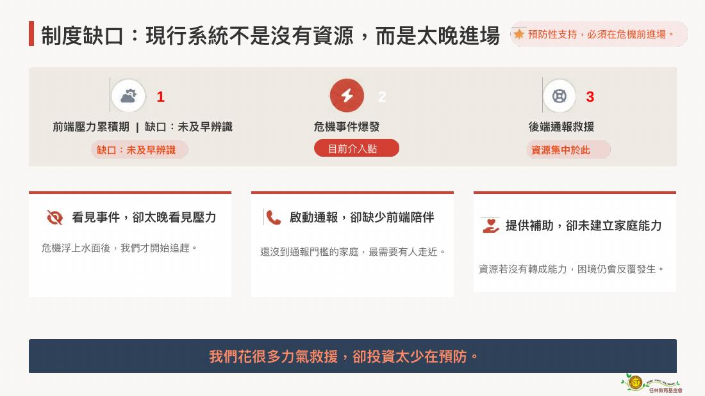
04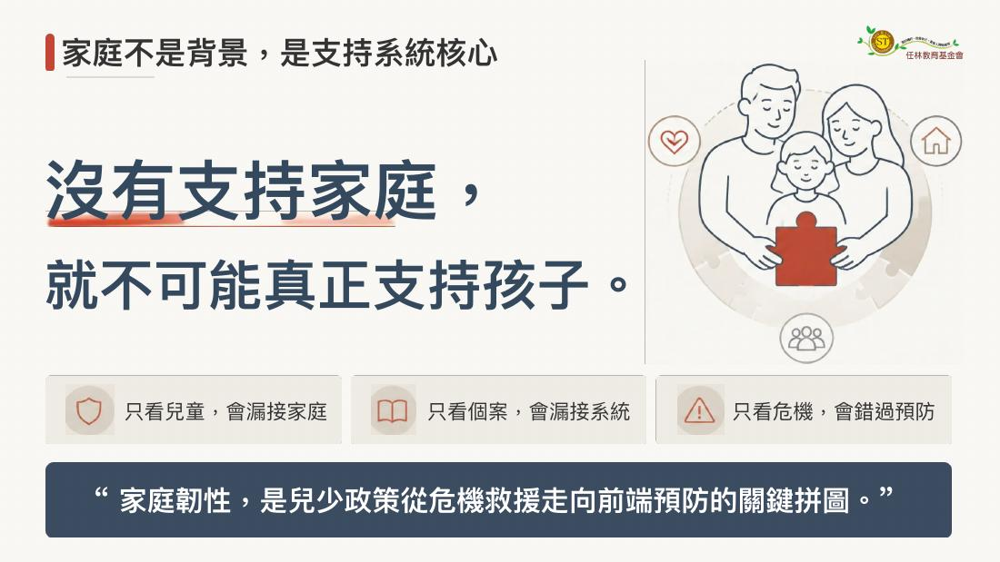
05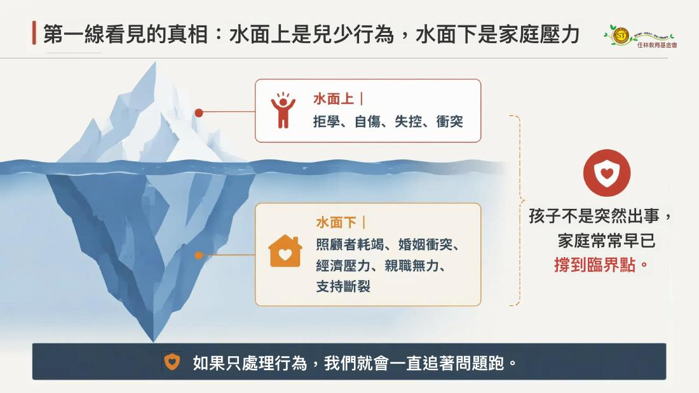
06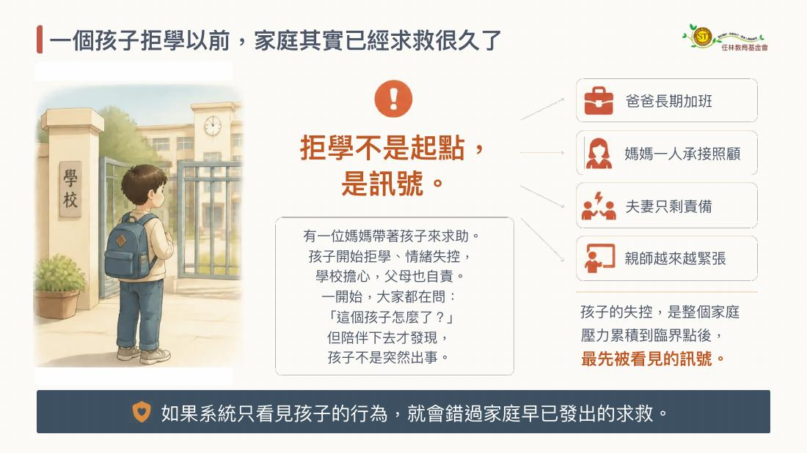
07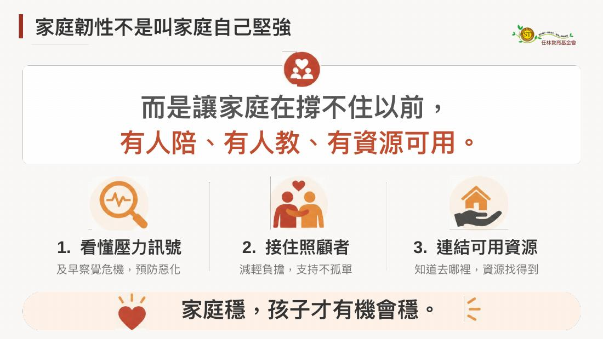
08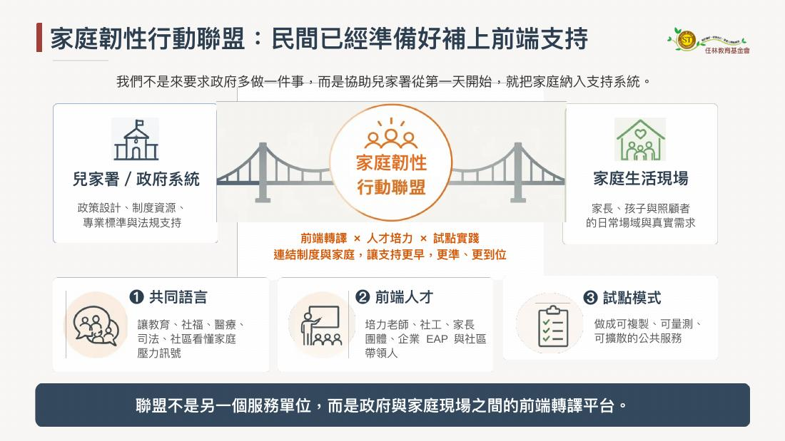
09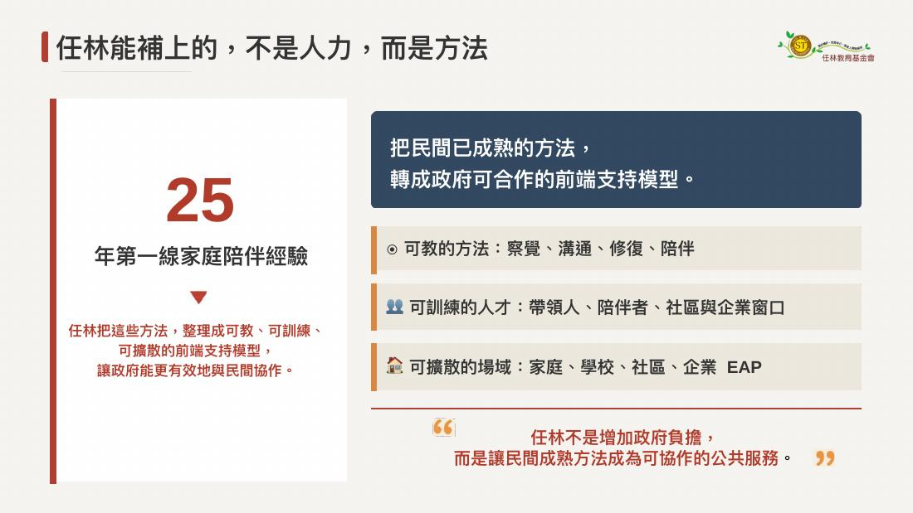
10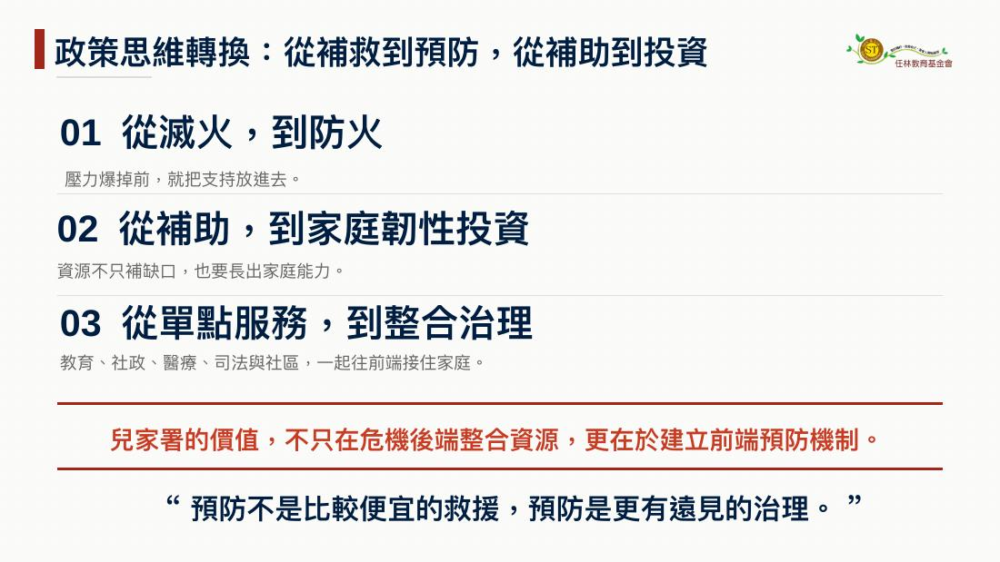
11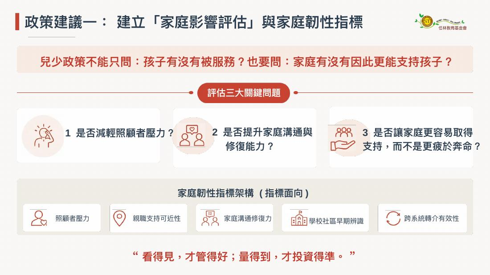
12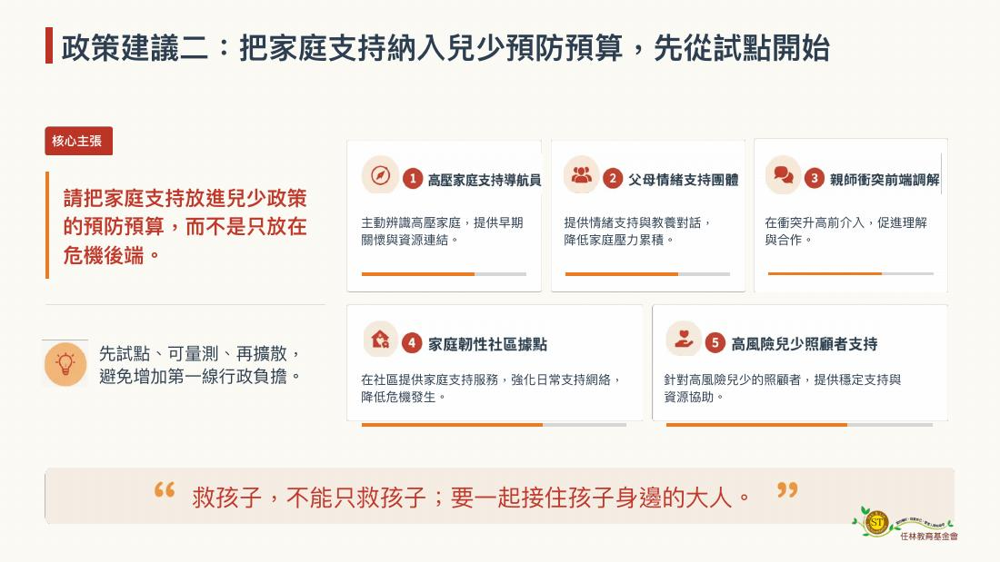
13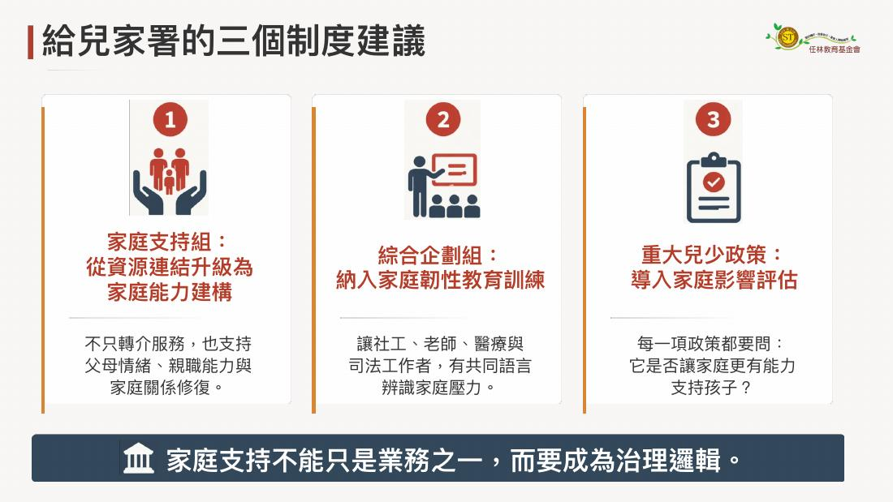
14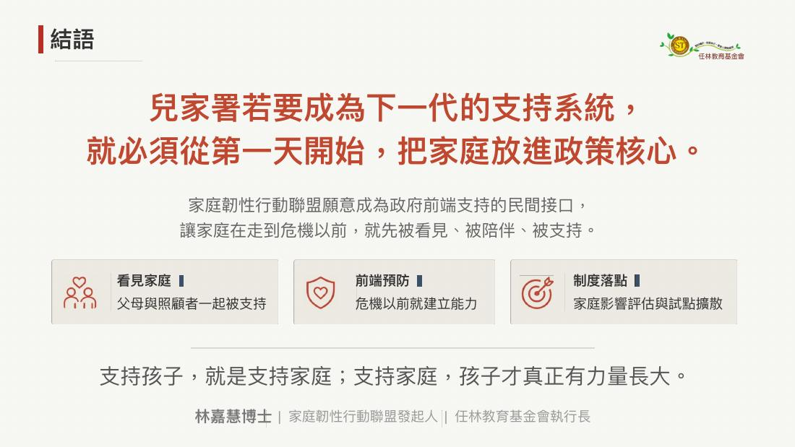
三盟共同呼籲 · 家庭相關
呼應本場，三盟主張推動《家庭教育法》修法，納入家庭影響評估、家庭韌性指標與家庭教育專業人員法定角色，讓家庭支持從宣導課程升級為前端預防制度。
→ 回論壇手冊看完整三項行動